VISUAL LAB / EXPLAINABLE STATE
看见数据，追踪下一步。
用流程图、原始SVG和可逐步操作的演示辅助理解。所有图与交互都在本地运行；数字为教学合成数据，不是真实模型置信度。
动态演示只在点击后推进，可暂停或重置。学习时先预测，再点下一步；关注“为什么走这里”和“缺什么证据”。静态SVG能直接缩放，无需下载GIF或联网。
01 · 相似度高，为什么仍答错？
任务：2026年普通员工询问上海出差住宿上限。切换过滤，再改变Top-K，观察哪些资料进入上下文。
为什么过滤应在生成之前？
版本与角色决定证据适用性；权限过滤还决定内容可否进入模型。生成后删除答案不能抹去模型已经见到的越权上下文。Top-K增加不能替代过滤和证据充分性检查。
02 · 多跳关系：从导师找到资助方
问题：“张老师的学生参加了研究所Y资助的哪个项目？”沿有方向、带出处的边逐步展开。
走通路径后，还缺什么检查？
节点身份是否正确、边是否误抽取、关系方向和有效时间是否适用、原文是否完整可信。图上的连通仅产生候选证据；不能把相关链自动解释为因果链。
03 · 最危险的窗口：已经提交，却没收到确认
同一个任务在业务提交后进程崩溃。切换业务侧幂等键支持，再一步步恢复。
为什么不是简单“超时就重试”？
超时意味着调用方不知道结果，业务可能成功。若直接重发扣款/通知，会重复产生效果。业务侧幂等与状态查询能缩小窗口；若第三方不支持，应对账、挂起或人工介入，不能仅凭本地checkpoint声称跨系统恰好一次。
仓库原始图解 · 41 张 SVG
本地图像，断网可看；点击打开原图，可放大查看。原图观点沿用教材，版本相关细节结合勘误页使用。

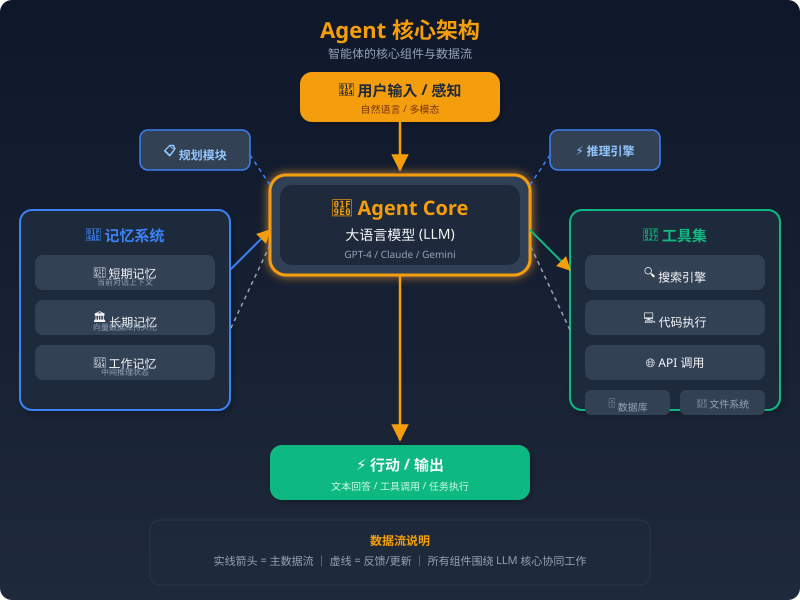

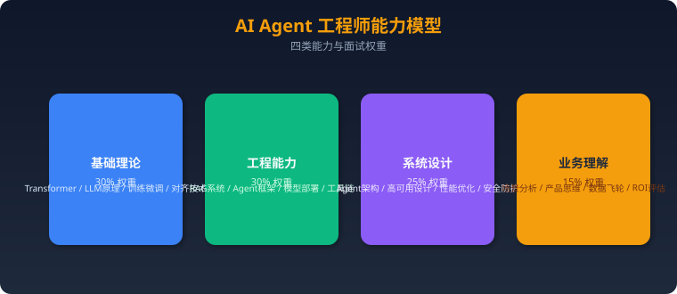


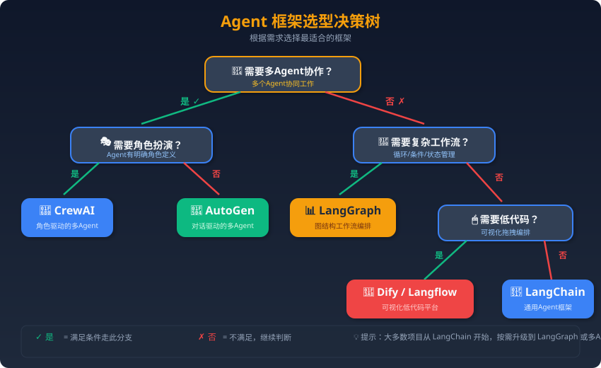


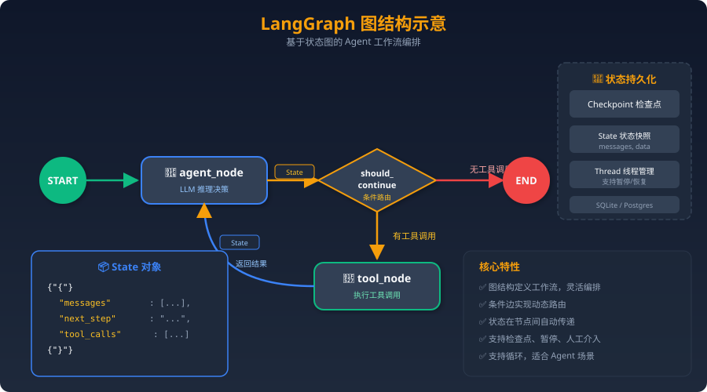


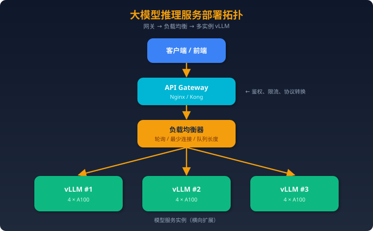


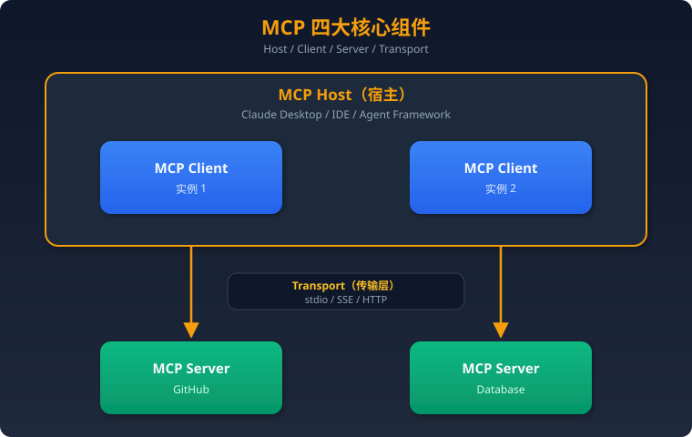


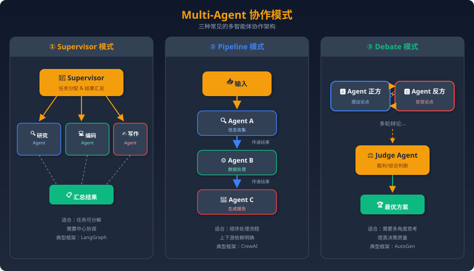


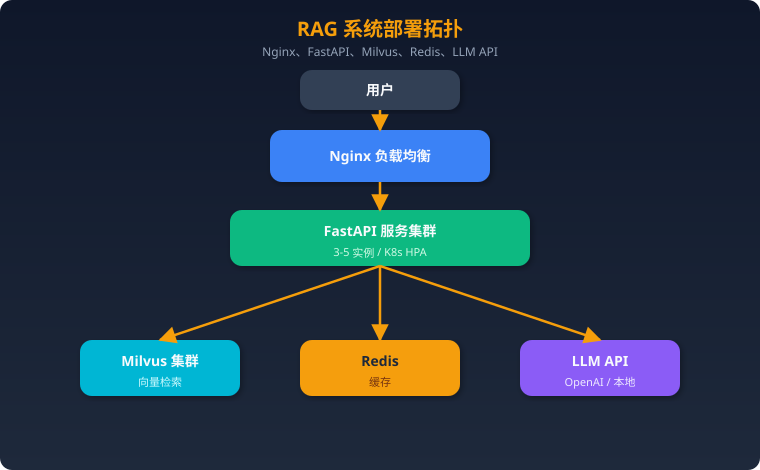

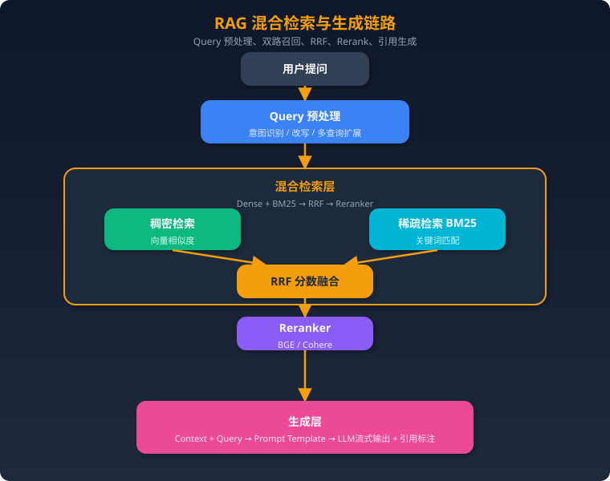

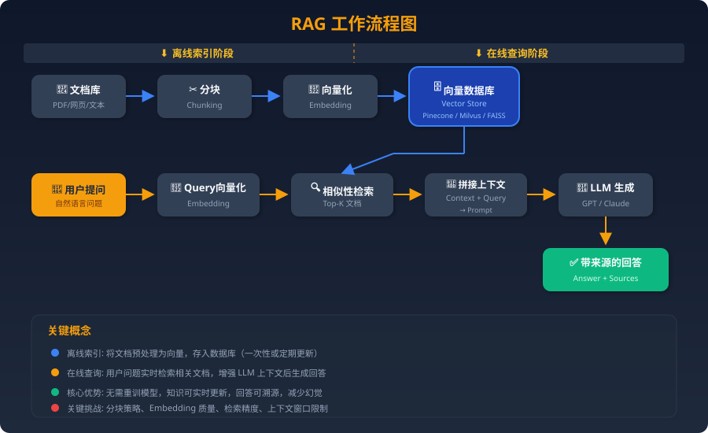

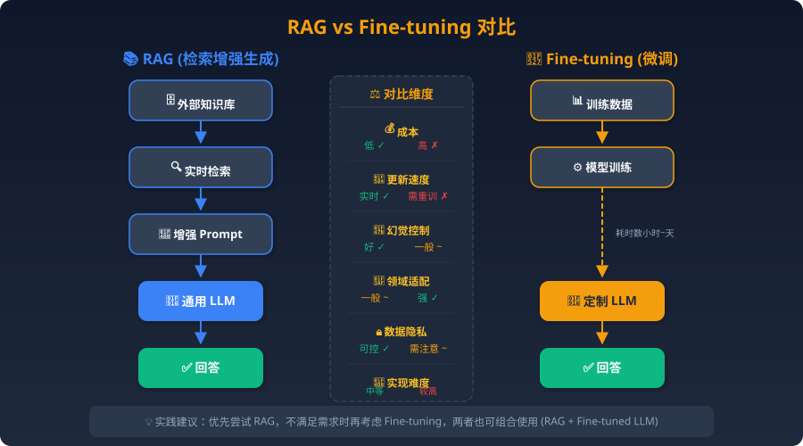

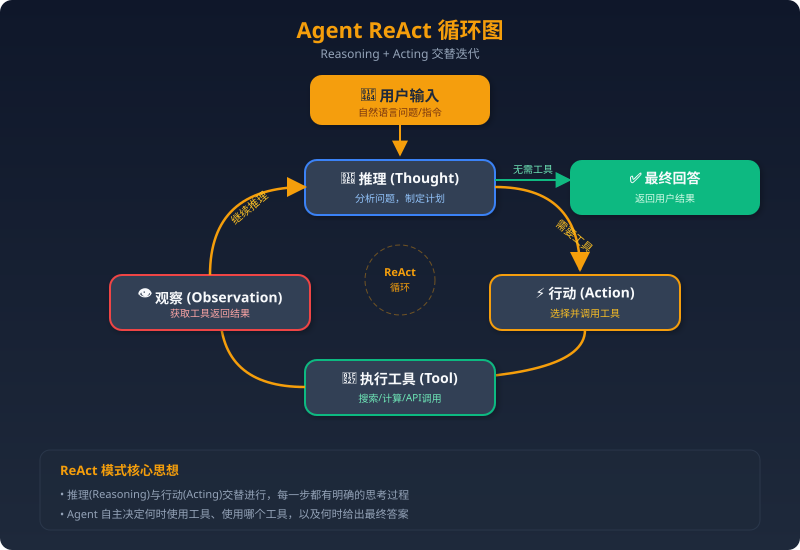


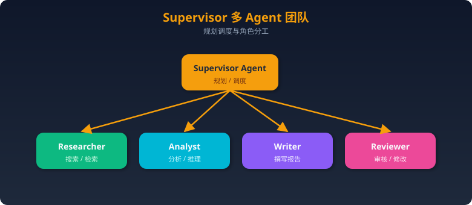

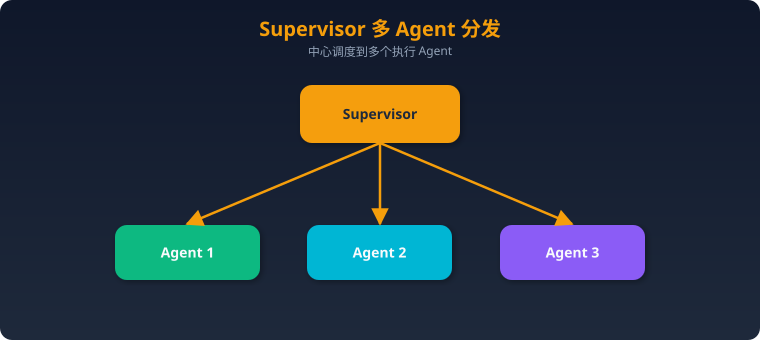